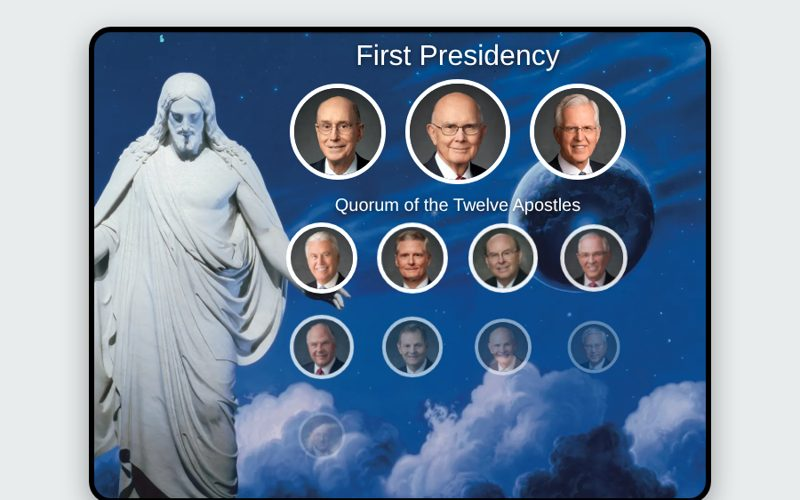

ICE 1 · CSS Grid & Backgrounds
Apostle Spotlight
The assignment: Match a provided design by building a card that shows the First Presidency and the Quorum of the Twelve Apostles, with a photo and name for each, set over a background image of the Christus.
What I learned
- Arranging rows of photos with CSS Grid and
grid-template-columns - Positioning a decorative image with
background-sizeandbackground-position - Grouping each photo and name with
figureandfigcaption - Polishing a design with rounded borders, shadows, and text shadows